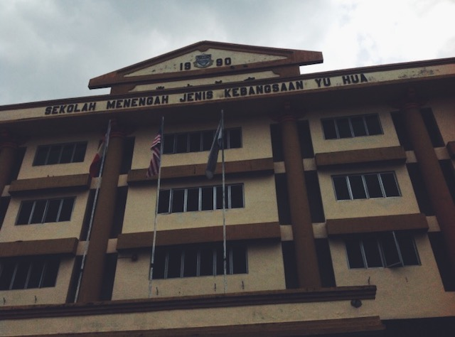
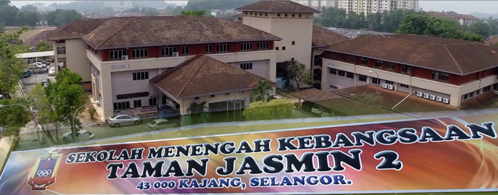

These are the places where I learn and grow!


| School/Uni | Year | Year/Form/Sem | Link To Website |
|---|---|---|---|
| SRJK(C) Yu Hua | 2008-2013 |
Year 1- Year 6 |
SRJKC YU HUA |
| SMJK(C) Yu Hua | 2014 |
Form 1 |
SMJKC YU HUA |
| SMK TAMAN JASMIN 2 | 2015-2018 |
Form 5 |
SMKTJ2 |
| UiTM KAMPUS REMBAU | 2019-Now |
Sem 1 - Now |
UiTM REMBAU |